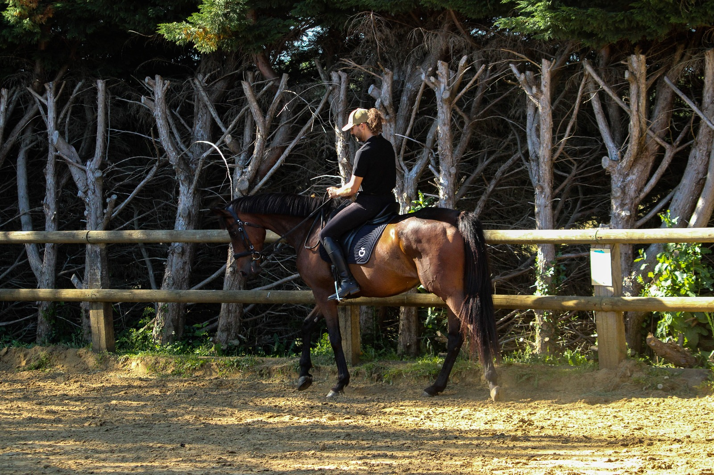

Soins du Cavalier
Pour le cavalier

Pour le cavalier
Le cavalier est la moitié du couple équestre. Sa posture, ses tensions, ses blocages intérieurs se transmettent directement au cheval. Prendre soin du cavalier, c'est prendre soin de la relation. Florian Poupin propose des soins sur mesure pour libérer le corps, éclaircir l'esprit et retrouver la justesse dans l'assiette et dans l'écoute.
Un travail centré sur le corps du cavalier : gainage, souplesse, proprioception et coordination. Monter à cheval sollicite des groupes musculaires fins et une conscience corporelle développée. Cette préparation aide le cavalier à mieux comprendre son corps, à l'activer juste, à le relâcher là où c'est nécessaire — pour être enfin disponible pour son cheval.
Libération des tensions musculaires et articulaires avant la montée en selle. Un cavalier souple et détendu transmet des aides plus fines, absorbe mieux les mouvements du cheval, et retrouve une assise plus profonde et plus stable. Le stretching prépare également le cavalier mentalement : il favorise la concentration et l'état de présence indispensable au dialogue équestre.
Le soin énergétique agit sur les déséquilibres subtils du cavalier — stress, fatigue nerveuse, tensions émotionnelles — qui parasitent souvent la qualité du travail à cheval. En favorisant un état d'équilibre intérieur, le cavalier retrouve calme, centrage et réceptivité. Un outil précieux pour les cavaliers qui ressentent un blocage sans cause physique identifiée.
Équilibre et centrage intérieur
Un accompagnement en profondeur pour identifier et libérer les pressions intérieures — doutes, inhibitions, peurs, croyances limitantes — qui se manifestent dans le corps et freinent la progression. Ce soin agit à la fois sur la structure physique et sur la dimension psychologique, pour permettre au cavalier d'être pleinement lui-même face à son cheval.
Corps, esprit et libération intérieure
Formule combinée associant l'activation musculaire ciblée de la préparation physique et la libération corporelle du stretching. Une séquence complète pour arriver en selle dans les meilleures conditions physiques possibles, avec un corps éveillé, souple et prêt à l'échange avec le cheval.
Formule combinée — Corps activé et détendu
La formule la plus complète pour le cavalier seul : le travail sur les pressions intérieures et les blocages profonds s'enrichit de l'harmonisation énergétique pour une transformation durable. Corps, mental et énergie sont travaillés conjointement, offrant au cavalier une clarté et une disponibilité nouvelles pour aborder son équitation autrement.
Formule combinée — Transformation profonde
Pour une transformation en profondeur, la formule complète rassemble tous les soins sur deux journées dédiées. Le temps nécessaire pour aller au bout de chaque étape, sans précipitation, en laissant le corps et l'esprit intégrer chaque étape.
2 jours — soins complets
Huile essentielle en supplément pour la Préparation physique du cavalier et le Développement physique et mental (10 euros).
Les séances de soins peuvent durer plus ou moins longtemps selon le cavalier et ses besoins.
Le cavalier est le reflet de ce qu'il porte en lui. Libérer le corps, c'est libérer la relation avec le cheval.
Retrouvez légèreté, justesse et disponibilité intérieure. Contactez Florian pour construire ensemble un programme de soins adapté à vos besoins en tant que cavalier.